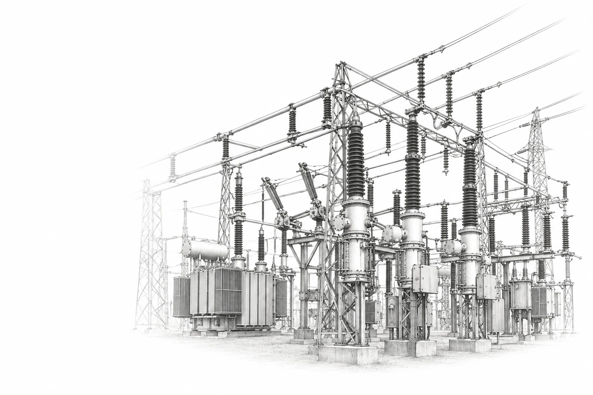

Maniobra una subestación, paso a paso.
Aprende las maniobras de mantenimiento en 10 configuraciones de barraje.
10
Configuraciones
15+
Elementos
2
Modos · Guiado e interactivo

Cómo funciona
Aprende la secuencia operativa sin riesgos
- 01Elige una configuración
- 02Avanza paso a paso
- 03Observa el sistema
Convención de estados
Secuencia de maniobra
Continuidad
Riesgo operativo
Entorno experimental
Diseña tu propia subestación
Arrastra, conecta y valida tu propia configuración.
Probar modo interactivoAcerca de
SubestaLab es una herramienta educativa interactiva para estudiar las configuraciones de barraje y los procesos de maniobra durante el mantenimiento de interruptores y barras en subestaciones eléctricas. Cada secuencia se presenta paso a paso, mostrando qué partes del sistema quedan energizadas, cuáles se aíslan y qué riesgos implica cada operación.
- Propósito
- Apoyar visualmente el aprendizaje de maniobras en subestaciones de alta tensión.
- Institución
- [Universidad] · [Programa / curso]
- Equipo
- [Nombre del docente] · [Nombres de los desarrolladores]